Contents
- UMINT (2026) - Zadanie 7: MLP vs CNN (MNIST)
- Loaded results
- MLP - Hyperparameters (Table 1)
- MLP - 5 runs per structure (Tables 2-3)
- MLP - Summary (Table 4)
- CNN - Hyperparameters (Table 5)
- CNN - 5 runs per architecture (Tables 6-8)
- CNN - Summary (Table 9)
- Dropout analysis (Tables 10-11)
- MLP vs CNN comparison (Table 12)
- CPU vs GPU timing (Table 13)
- Figures
UMINT (2026) - Zadanie 7: MLP vs CNN (MNIST)
Auto-generated by task7_write_report.m
Loaded results
Loaded mlp_results and cnn_results.
MLP - Hyperparameters (Table 1)
Model Skryte_vrstvy Neurony Epochy LR Batch
________ _____________ _______ ______ _____ _____
{'MLP1'} 1 128 20 0.001 64
{'MLP2'} 2 NaN 20 0.001 64
MLP - 5 runs per structure (Tables 2-3)
\n-- table2_3_mlp_runs_MLP1.csv --\n Beh Train_loss Test_loss Train_acc_pct Test_acc_pct
___ __________ _________ _____________ ____________
1 0.0184 0.071953 99.47 97.75
2 0.035332 0.080805 99.266 97.47
3 0.020797 0.067378 99.675 97.93
4 0.037767 0.072571 99.464 97.59
5 0.0025904 0.066033 99.754 97.91
\n-- table2_3_mlp_runs_MLP2.csv --\n Beh Train_loss Test_loss Train_acc_pct Test_acc_pct
___ __________ _________ _____________ ____________
1 0.045863 0.084836 99.436 97.68
2 0.00094093 0.073643 99.55 97.98
3 0.056974 0.077535 99.391 97.87
4 0.0011477 0.075934 99.636 97.98
5 0.019717 0.075999 99.434 97.85
MLP - Summary (Table 4)
Model Min_test_acc_pct Max_test_acc_pct Priemer_test_acc_pct Priemer_test_loss
________ ________________ ________________ ____________________ _________________
{'MLP1'} 97.47 97.93 97.73 0.071748
{'MLP2'} 97.68 97.98 97.872 0.077589
CNN - Hyperparameters (Table 5)
Model Conv_vrstvy Filtre FC_vrstvy Epochy Batch
________ ___________ _____________ _________ ______ _____
{'CNN1'} 2 {'16,32' } 128 15 64
{'CNN2'} 2 {'32,64' } 128 15 64
{'CNN3'} 3 {'32,64,128'} 256 15 64
CNN - 5 runs per architecture (Tables 6-8)
\n-- table6_8_cnn_runs_CNN1.csv --\n Beh Train_loss Test_loss Train_acc_pct Test_acc_pct
___ __________ _________ _____________ ____________
1 0.011214 0.034799 99.664 98.96
2 0.0016211 0.034653 99.775 98.97
3 0.11018 0.040541 99.559 98.8
4 0.0085526 0.034666 99.563 98.88
5 0.0047447 0.031769 99.752 99.12
\n-- table6_8_cnn_runs_CNN2.csv --\n Beh Train_loss Test_loss Train_acc_pct Test_acc_pct
___ __________ _________ _____________ ____________
1 0.016133 0.031883 99.718 98.88
2 0.010439 0.030065 99.696 99.04
3 0.0048789 0.025635 99.848 99.21
4 0.00065376 0.02339 99.789 99.32
5 0.0015239 0.038972 99.584 98.9
\n-- table6_8_cnn_runs_CNN3.csv --\n Beh Train_loss Test_loss Train_acc_pct Test_acc_pct
___ __________ _________ _____________ ____________
1 0.037883 0.029698 99.738 99.05
2 0.011223 0.024856 99.816 99.29
3 0.032946 0.022879 99.82 99.38
4 0.021164 0.035329 99.525 98.99
5 0.0013876 0.028505 99.695 99.16
CNN - Summary (Table 9)
Model Min_test_acc_pct Max_test_acc_pct Priemer_test_acc_pct Priemer_test_loss
________ ________________ ________________ ____________________ _________________
{'CNN1'} 98.8 99.12 98.946 0.035285
{'CNN2'} 98.88 99.32 99.07 0.029989
{'CNN3'} 98.99 99.38 99.174 0.028253
Dropout analysis (Tables 10-11)
Model Dropout Pocet_behov Priemer_epochy_zaciatku_pretrenovania Priemer_val_loss
______ _______ ___________ _____________________________________ ________________
{'D1'} 0 5 5944.2 0.026606
{'D2'} 0.3 5 4895.4 0.029447
{'D3'} 0.5 5 8915.8 0.02554
Dropout Pocet_behov Priemer_train_acc_pct Priemer_test_acc_pct Priemer_test_loss
_______ ___________ _____________________ ____________________ _________________
0 5 99.618 98.982 0.032048
0.3 5 99.711 99.184 0.027095
0.5 5 99.732 99.286 0.025374
MLP vs CNN comparison (Table 12)
Pristup Pocet_modelov Priemer_test_acc_pct Priemer_test_loss
_______ _____________ ____________________ _________________
{'MLP'} 2 97.801 0.074669
{'CNN'} 3 99.063 0.031176
CPU vs GPU timing (Table 13)
Model CPU_cas_s GPU_cas_s Zrychlenie
___________ _________ _________ __________
{'MLP2' } 30.628 28.058 1.0916
{'CNN3' } 351.64 64.1 5.4858
{'Priemer'} 191.13 46.079 4.148
Figures
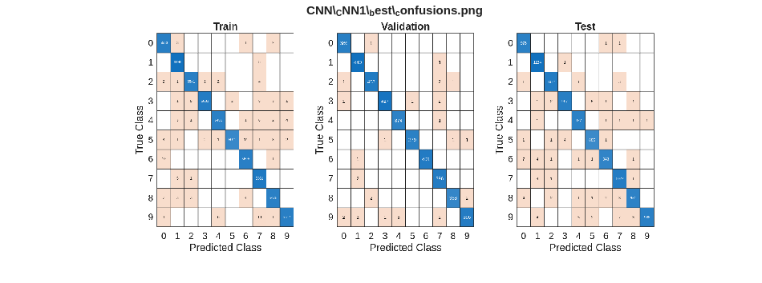
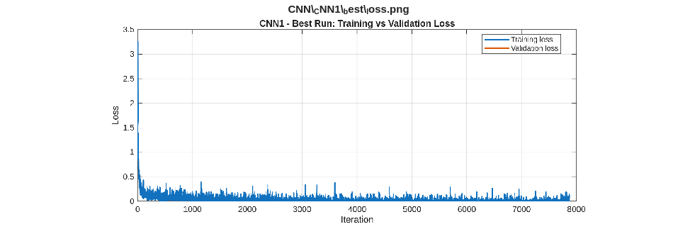
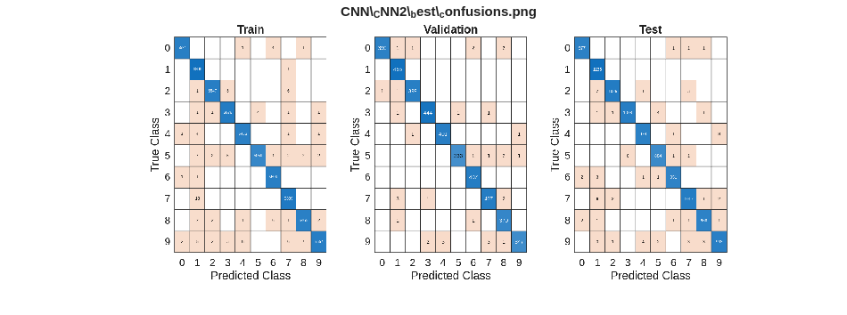
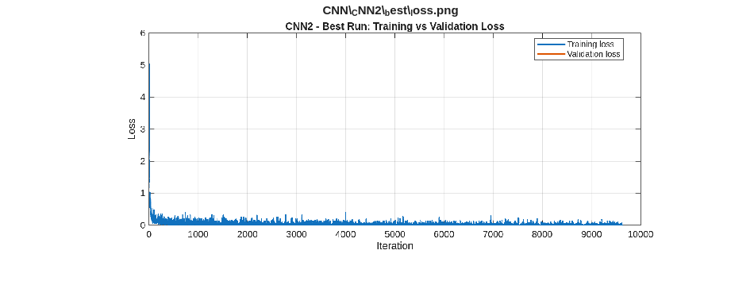
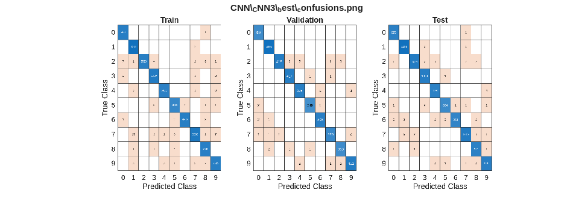
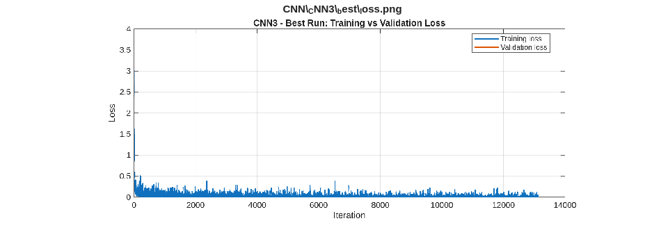
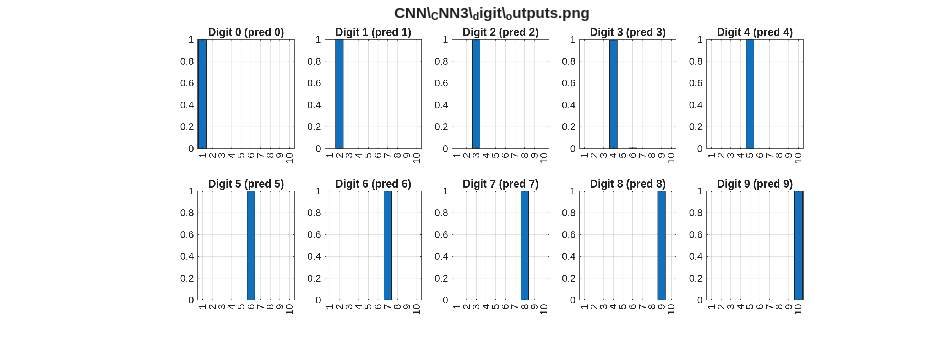
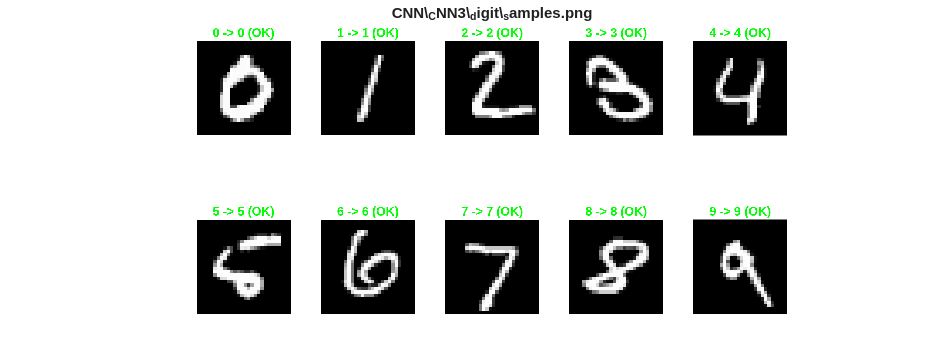
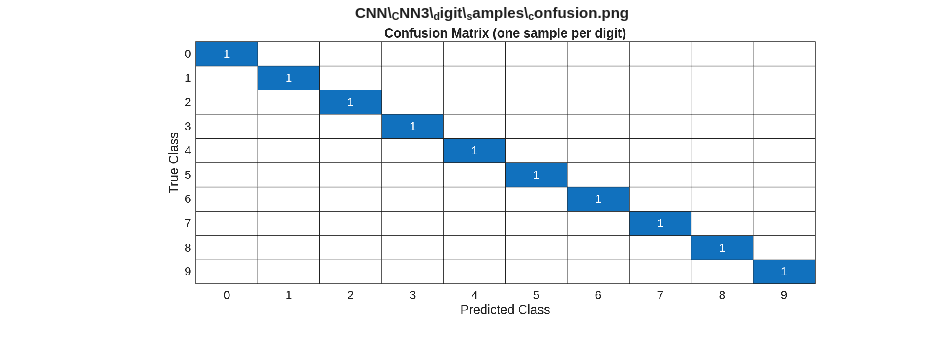
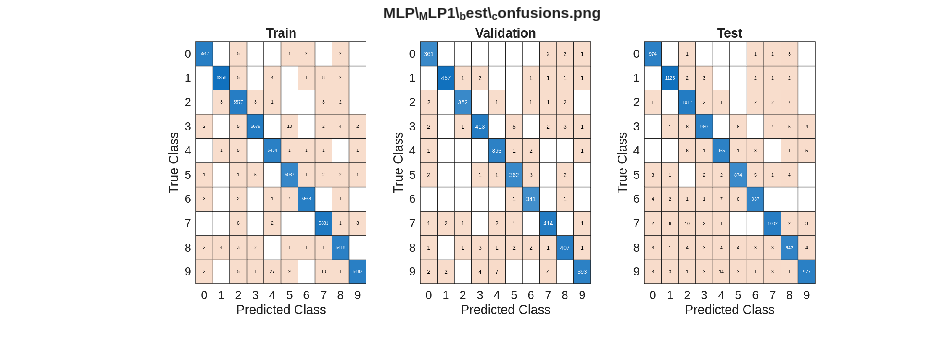
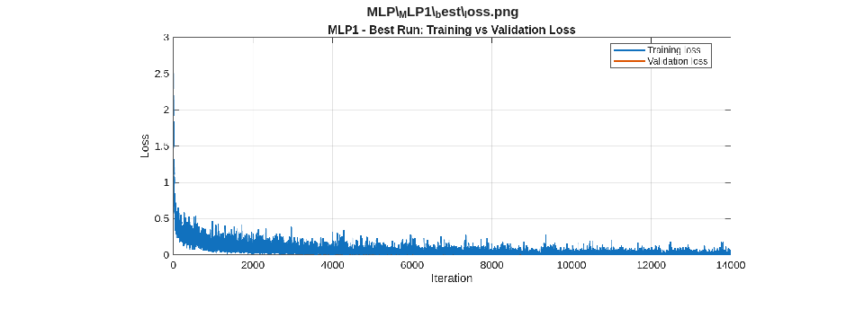
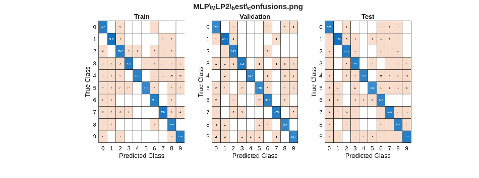
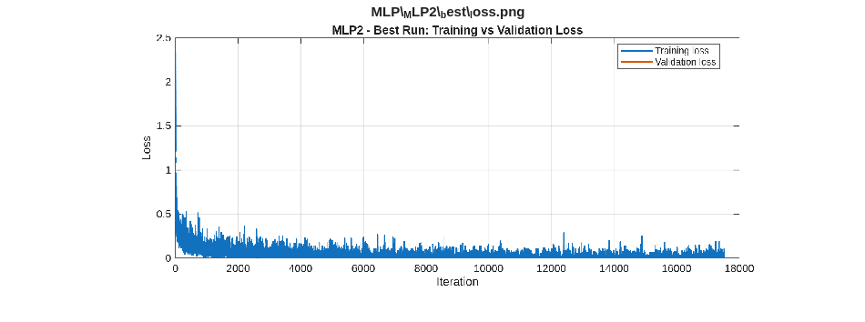
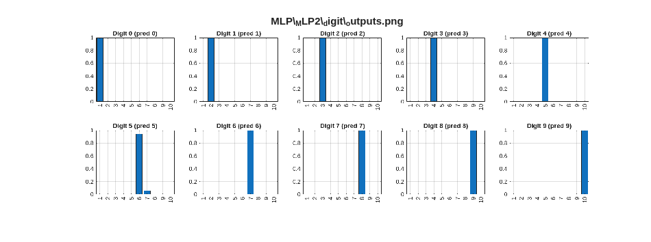